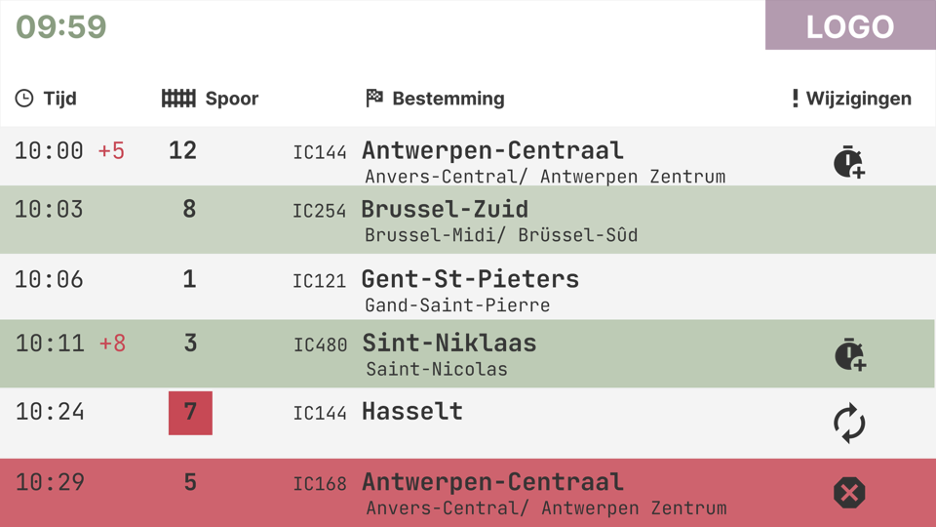
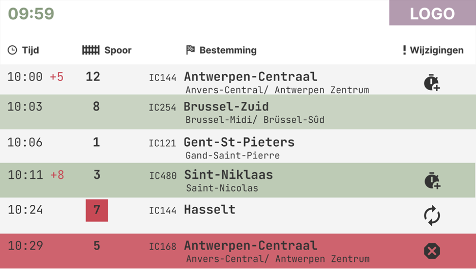

Herwerken mid-fidelity prototypes
Deze week heb ik feedback gekregen op mijn mid-fi treinschermen. Met deze feedback heb ik mijn prototypes aangepast en verbeterd in Figma.
Feedback tijdens de les
- Geen goed contrast tussen witte letters en lichtgroene achtergrond.
- Rode lijn voor geannuleerde trein is misschien niet beste oplossing.
- Pictogrammen zijn niet even groot als lettergrootte, wat er onordelijke uitziet.
- Alles moet beter uitgelijnd zijn op elkaar.
- Bolletjes op perronscherm zijn onnodig, zorgen voor verwarring.
→ Met deze feedback ben ik aan de slag gegaan om aanpassingen in mijn ontwerp te maken en heb ik voor elk treinscherm meerdere versies gemaakt in Figma.
Aanpassing overzichtscherm vertrekhal
- De rode lijn heb ik eerst vervangen door een onderbroken rode lijn, maar trekt niet voldoende de aandacht. Dus heb het aangepast naar een rood vak, wat veel duidelijker is.
- Ik heb gespeeld met de groene kleuren en contrast met de kleur van de tekst.
- Ook heb ik alles beter uitgelijnd, wat voor meer orde en duidelijkheid zorgt.
Aanpassing perronscherm
- De lijn met bolletjes zorgde voor verwarring, dus heb deze weggelaten.
- Weer heb ik gespeeld met contrast in kleur en tekst: donkere kleur op lichte achtergrond.
Aanpassing wagonindelingsscherm
- Onnodige informatie zoals perron, heb ik weggelaten.
- Informatie over de tussenstops heb ik toegevoegd.
- Betere verdeling over het scherm.
 
